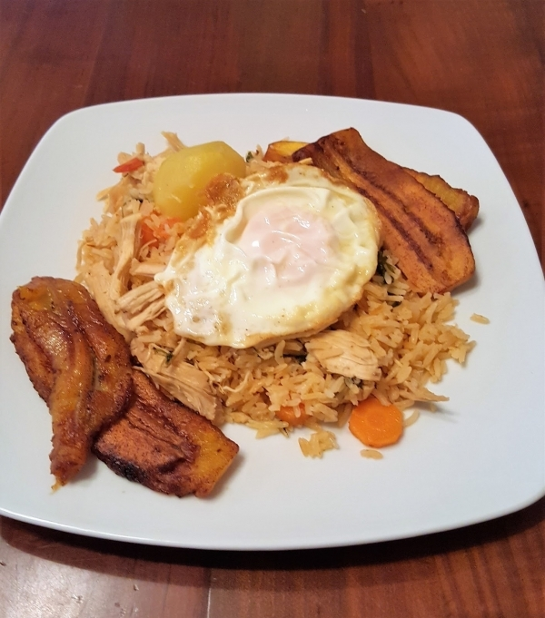
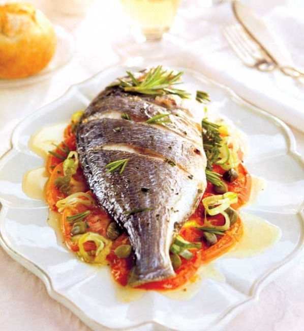
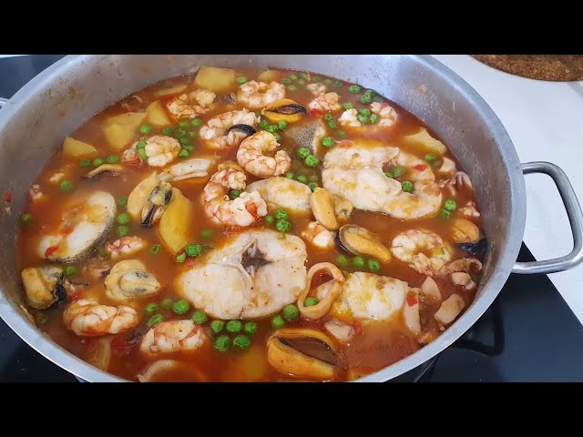

Recetas por Departamento

La Paz
Receta tradicional de Semana Santa en La Paz: wallake, pescado andino en caldo.

Santa Cruz
Plato típico: Majadito de pescado acompañado de yuca y plátano frito.

Cochabamba
Plato representativo: Pescado al horno con papas y ensalada de arvejas.

Tarija
Cazuela de pescado con mote y papas.